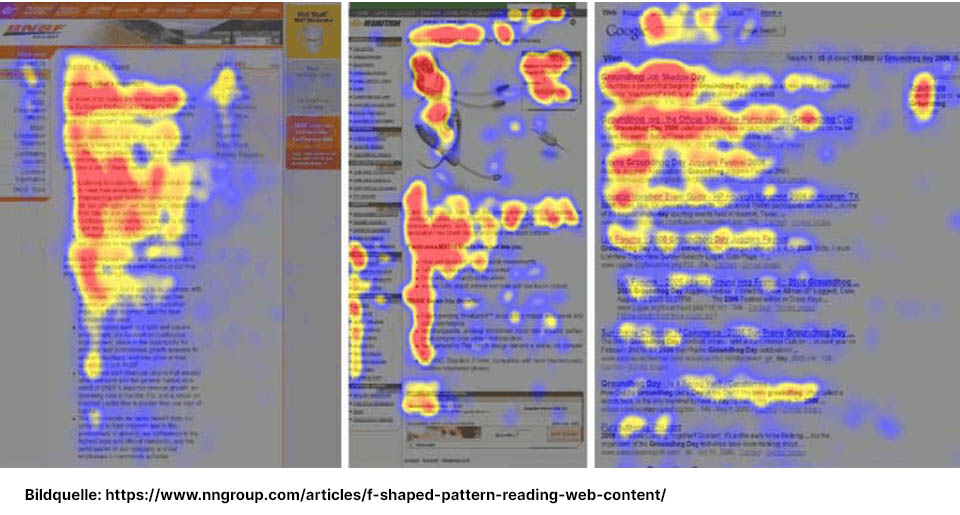

mit KI-gestützten Workflows
3. Semester
Fachlehrer Stefan Sauer THWS Geovisualisierung
Prüfungsleistung benotete Portfolioaufgabe
Lehrinhalt:
Ein Schwerpunkt des Kurses wird auf den Grundlagen und der KI-gestützen Erstellung von Webseiten liegen.
HERDT-Verlag (Hochschulmedien): In der universitären Lehre gilt das Programm HERDT-Campus ALL YOU CAN READ als Standardwerk.
Essenzielle Webseiten zur Weiterbildung
Das MDN
https://developer.mozilla.org/en-US/
W3Schools
SelfHTML
https://wiki.selfhtml.org/
CSS-Tricks
Can I Use
W3C Web Accessibility Initiative (WAI)
Digital Shepherd
Egal welche Quelle genutzt wird: Der moderne Ansatz lautet "Digital Shepherd" (Digitaler Hirte). Man sollte Code (egal ob aus Tutorials, Foren oder von einer KI generiert) niemals blind kopieren. Die eigentliche Kompetenz liegt aktuell darin, den Code zu verstehen, seine Barrierefreiheit (z.B. korrekte Alt-Texte für Bilder), semantische Sauberkeit und Performance zu validieren, um langfristig wartbare Webprojekte aufzubauen.
Digital Shepherd & "Vibe Coding"
Die Auditing-Checkliste des Digital Shepherd Wenn eine KI Code generiert, müssen Sie diesen stets kritisch auf folgende Kriterien prüfen:
<main>
<article>
<header>
<div>
Zukunftsperspektive: Vom Coder zum Architekten Wie verändert sich die Rolle von Webentwicklern durch generative KI?
https://notepad-plus-plus.org/downloads/
https://code.visualstudio.com/
https://antigravity.ai/
https://cursor.com/
https://www.apachefriends.org/
https://www.google.com/chrome/
https://git-scm.com/ https://github.com/
2020 beschließt der KFZ Mechaniker Meister Maik seine Passion zur Haupterwerbsquelle & sich selbstständi zu machen. Durch sein mobiles Leben im LKW hat er sich auf den Ausbau von Fahrzeugen zu autarken Wohnräumen spezialisiert. Seine jahrelange Erfahrung in der Werkstattleitung eines Camping- & Caravantechnik Anbieters nutzt er, um Caravans, Wohnmobile & individuelle Fahrzeugausbauten zu reparieren, pflegen & umzurüsten.
Seine Dienstleistungen beinhalten
Da Maik ein mobiles Leben führt, ist er selten am gleichen Platz zu finden. Um ihn und seine Dienstleistungen dennoch auffinden zu können, benötigt er eine gut auffindbare Webseite mit seinen digitalen Kontaktdaten.
Bevor überhaupt eine einzige Zeile Code geschrieben wird, muss zuerst definiert werden, welche Ziele mit dem Webauftritt verfolgt werden.
Zieldefinition: Webseiten-Ziele vor der Entwicklung festlegen. Am besten in einem Workshop oder Gespräch mit dem Auftraggeber.
Was ist schon schön?
https://seiten-werk.com/die-schoensten-und-besten-52-webseiten-in-deutschland-und-der-welt/
https://www.mankord.com/article/die-10-besten-websites-und-webdesign-trends-2022/
https://mkb-marketing.de/ratgeber/schoene-webseiten-design-beispiele/
Form follows function:
Jedes Design-Element muss optisch ansprechend und funktional sein. Kein Element ohne Funktion!

64 Prozent des globalen Traffics stammt von Smartphones! Smartphones sind für 64 Prozent des gesamten Internetverkehrs verantwortlich. In Asien ist der Smartphone-Anteil am Traffic besonders hoch.
Mobile-First-Indexing:
Ladezeiten (Page Speed):
Nutzererfahrung (UX) & User Signals:
20 Tips zur SEO-Optimierung:
Inhalt & On-Page-Faktoren
Technik & Off-Page-Faktoren
https://www.gesetze-im-internet.de/urhg/index.html
copy & paste? Das Urheberrecht bezeichnet zunächst das subjektive und absolute Recht auf den Schutz geistigen Eigentums in ideeller und materieller Hinsicht.
Recherchieren Sie VOR DER VERÖFFENTLICHUNG, ob und wer Rechte an dem Material (Bilder und Texte) Ihrer Webseite hat.
Definition: Vorgeschriebene Anbieterkennzeichnung und Herkunftsangabe einer Webseite zur direkten Kontaktaufnahme.
Gesetzliche Grundlagen: Geregelt in § 5 DDG (Digitale-Dienste-Gesetz) und § 18 MStV (Medienstaatsvertrag).
Wer ist verpflichtet?
Empfehlung: Zur Vermeidung von Abmahnungen auch bei privaten, aber öffentlichen Seiten ein Impressum einrichten.
Pflichtangaben im Impressum
„Ich betreibe eine kleine Seite, auf der ich für meine Familie und Freunde Inhalte zu Verfügung stelle. Benötige ich für diese private Seite eine Datenschutzerklärung?“
Antwort: Grundsätzlich gilt: Wer eine Webseite betreibt, muss mindestens die Informationen gem. § 5 Abs. 1 DDG zur Verfügung stellen und über die Verarbeitung von personenbezogenen Daten informieren. Selbst wenn keine Analyse-Tools oder Kontaktformulare eingebaut sind, erfolgt beim Aufruf der Seite eine Datenverarbeitung, da der Webserver die IP-Adresse des Nutzers protokolliert (Server-Logfiles). Daher ist für so gut wie jede Webseite eine Datenschutzerklärung erforderlich, um den Informationspflichten der DSGVO nachzukommen.
Gesetzliche Grundlage: DSGVO (EU-Datenschutz-Grundverordnung) und BDSG (Bundesdatenschutzgesetz).
Typische Auslöser auf Webseiten
Sobald mindestens eines der folgenden Elemente genutzt wird:
Muss ich dann zum Anwalt???
Im Zweifel ja!
Aber: Eine Datenschutzerklärung wird häufig über einen Online-Generator erzeugt:
https://datenschutz-generator.de/ https://www.e-recht24.de/muster-datenschutzerklaerung.html
Definition: Textdateien, die Informationen enthalten und im Browser gespeichert werden können. Sie dienen der Identifikation, dem Merken von Zuständen oder der Analyse des Nutzerverhaltens.
Aufbau einer Cookie
Aufgabe von Cookies:
Brauche ich einen Cookie Warner?
Gesetzliche Grundlage: § 25 TDDDG (Telekommunikation-Digitale-Dienste-Datenschutz-Gesetz).
Anforderungen an ein rechtskonformes Consent-Banner
Tipp: In Chrome können Sie unter „Einstellungen > Datenschutz und Sicherheit > Cookies und andere Websitedaten > Alle Cookies und Websitedaten“ anzeigen lassen, ob Ihr Server / Seite Cookies setzt.
Benötigt werden:
Die Hypertext-Lösung: HTML ermöglichte es, Dokumente plattformunabhängig darzustellen und über Hyperlinks direkt miteinander zu verknüpfen. Ein flexibles System sollte Berichte, Handbücher und Protokolle für alle Forscher netzwerkweit auffindbar machen.
Filmtipp: Jurassic Web Der Film erzählt die unbekannte Geschichte dieser Wegbereiter der digitalen Welt und ihrer Nutzungsmöglichkeiten – die Urgeschichte der sozialen Netzwerke!
Nur erhältlich:
Bei mir :)
HTML = Hypertext Markup Language. Hypertext > Verlinkung von Webseiten
Das Tag Paragraph steht für einen Textabsatz. Dabei leitet das Tag <p> den Paragraph ein und </p> beendet diesen. Mit wenigen Ausnahmen (leeren Elementen) besteht ein Tag immer aus einem öffnenden und einem schließenden Element.
<p>
</p>
<p>Dies ist ein Paragraph.</p>
3ter November 1992 erschien die erste Version der HTML-Spezifikation.
(Wikipedia)
Wie kommt die Webseite zum User?
Webserver können
Hauptaufgabe eines Webservers
Für komplette Webseite werden benötigt:
Eine komplexen Webseite kann hunderte Anfragen und Serverantworten benötigen.
Webserver ist in der Lage:
Bekannte Beispiele für Webserver
Apache
HTTP Server ist:
HTTP-Protokoll*
Hypertext Transfer Protocol
Schichtenmodell der Netzwerkkommunikation
HTTP["Anwendungsschicht: HTTP (WAS wird übertragen?) Format der Webinhalte (z. B. HTML)"]
--> TCP["Transportschicht: TCP (WIE wird es übertragen?) Zuverlässigkeit, Fehlerkontrolle, Ports (z. B. Port 80)"]
--> IP["Netzwerkschicht: IP (WOHIN wird es übertragen?) Adressierung (IP-Adressen) und Routing"]
Definition & Zweck:
Client-Server-Modell:
Zustandslosigkeit (Stateless):
Methoden:
HTTP-Statuscodes (Antwort des Servers):
Beispiel einer HTTP-Anfrage (GET):
Anfrage des Browsers beim Server (vereinfacht): GET /index.html HTTP/1.1 Host: www.beispiel.de Antwort des Servers (vereinfacht): HTTP/1.1 200 OK Content-Type: text/html <html>...
HTTP-Secure (HTTPS)
Verschlüsselung zwischen Webserver und Browser
Eine HTTPS-Seite erkennen Sie daran, dass einerseits oben in der Adresszeile des Browsers der besagte Schriftzug steht, andererseits an dem verriegelten Schloss .
SSL - Secure Sockets Layer
https://wiki.selfhtml.org/wiki/Grundlagen/HTTPS_und_TLS
Zertifikate
digitales Zertifikat
Wer verlängert das Zertifikat?
Technisch wird ein Zertifikat nicht verlängert, sondern durch ein neues ersetzt.
beschreibt den Speicherplatz auf einem Server, der zur Unterbringung von Dateien einer Website genutzt wird.
HTTPS funktioniert nur dann optimal, wenn alle Inhalte, die auf einer Webseite dargestellt werden, über HTTPS geladen werden.
Werden zum Beispiel auf einer HTTPS-Seite externe Ressourcen wie Bilder, Skripte oder CSS-Dateien unverschlüsselt nachgeladen, spricht man von einem sogenannten Mixed-Content, der zu Problemen bei der sicheren Darstellung führen kann.
Webhoster
heise Webhoster-Vergleich https://www.heise.de/download/specials/Webhosting-Vergleich-So-finden-Sie-den-passenden-Hosting-Anbieter-6037473
Vorsicht bei Homepage-Baukästen: Meist zielen die Angebote darauf ab, den Kunden zu binden, sodaß ein Wechsel zu einem anderen Anbieter später nur erschwert möglich ist.
Selber hosten? Geht das?
Ja. Dafür muss jedoch Ihr Rechner 24/7 am Netz in Betrieb sein.
Beachten Sie allerdiengs auch, dass Ihr Provider das erlauben muss. Viele DSL Anbieter sehen es nicht gerne, wenn sie viele externe Zugriffe auf Ihren Webserver haben.
Lesen:
https://wiki.selfhtml.org/wiki/Webserver/SELF-Hosting
193.175.120.40
www.thws.de
www.thws.de.
.de
.org
thws
elearning.thws.de
https://www.denic.de/
ä
ö
ü
Muss ich dann immer zur DENIC?
Nein, das erledigt der Webhoster
https://www.ionos.de/ https://www.strato.de/ https://www.hostinger.com/ https://all-inkl.com/ https://checkdomain.de/
Vergleicht die Angebote! Welches ist das beste Angebot?
Angebotskriterien:
Domainabfrage auf der DENIC-Webseite
Ist der gewünschte Domainname noch frei?
Hurra! Die Domain maiks-mobiler-service.de ist noch frei…
(äääh... eigentlich nicht mehr :) )
maik-caravan.de
autoinstandsetzung-wuerzburg.de
autarker-fahrzeugausbau.de
maiks-mobiler-service.de
maiksmobilerservice.de
Die richtige TLD: Für den deutschen Markt immer primär .de wählen.
Aber auch spezifische Domains sind möglich: .ai ist die TLD für "Caribbean island of Anguilla" :)
.ai
.edu Domain ist streng limitiert und steht offiziell fast ausschließlich US-amerikanischen, staatlich akkreditierten Bildungseinrichtungen zur Verfügung. Internationale oder private Institutionen können diese meist nicht registrieren.
.edu
.com ist die TLD für kommerzielle Unternehmen und Organisationen weltweit & wirkt professionell.
.com
C:\Program Files
C:\xampp\
httpd.conf
Listen 80
Listen 8080
.html
.css
.js
C:\xampp\htdocs\
htdocs\mein-projekt\
http://localhost/
http://127.0.0.1/
http://localhost/mein-projekt/index.html
127.0.0.1
::1
localhost
https://mongoose.ws/binary/
mongoose.exe
index.html
http://localhost:8080
8080
Darstellungsunterschiede zwischen Browsern sind normal – solange die Funktionalität & Usability gewährleistet bleibt!
Die 4 goldenen Regeln der Usability:
Technischer Vergleich & Engines Blink (Chrome, Edge, Opera, Brave):
WebKit (Safari):
Gecko (Firefox)
Praxistipps für Webentwickler
F12
Strg + Umschalt + I
Cmd + Opt + I
console.log()
Zusammenfassung der Tools:
<font color="red">
<b>
Beispiel
<!-- index.html --> <link rel="stylesheet" href="style.css"> <h1>Meine Überschrift</h1>
/* style.css */ h1 { color: #ff6a00; font-size: 24px; font-weight: bold; }
Was ist CSS? (Cascading Style Sheets)
<body>
body { font-family: 'Outfit', sans-serif; color: #333333; /* Gilt für das gesamte Dokument */ } h1 { color: #005564; /* Überschreibt die vererbte Farbe für h1-Elemente */ }
Selektoren & Mediensteuerung
a { color: blue; }
.highlight { background: yellow; }
class="highlight"
#main-header { font-size: 2em; }
id="main-header"
/* Normales Styling für Desktop */ body { font-size: 16px; } /* Spezielles Styling für Smartphones (Breite maximal 600px) */ @media (max-width: 600px) { body { font-size: 14px; background-color: #f8f9fa; } }
Und nun? Learning by Doing!
HTML-Syntax: Die Bausteine des Webs
1. Tags und ihre Funktion Ein HTML-Tag besteht aus dem englischen Schlüsselwort in spitzen Klammern, z. B. <p> für einen Absatz oder <h1> für eine Hauptüberschrift. Fast alle Tags haben einen entsprechenden Schließenden Tag, der mit einem Schrägstrich (/) beginnt, z. B. </p>. Der Inhalt, der formatiert werden soll, steht zwischen diesen beiden Tags.
<h1>
/
Beispiel für einen Absatz:
<p>Hier steht der Text, den der Browser als neuen Absatz darstellt.</p>
2. Attribute: Zusätzliche Informationen
Beispiel für ein Bild mit Attributen:
<img src="foto.jpg" alt="Ein Foto von meiner Katze">
In diesem Beispiel definieren das Attribut src (source) und alt (alternative Text) das Bild und dessen Beschriftung für Screenreader und wenn das Bild nicht geladen werden kann.
src
alt
3. Elemente & leere Elemente
Meine Überschrift
</h1>
<img>
<br>
<br />
Groß- und Kleinschreibung in HTML